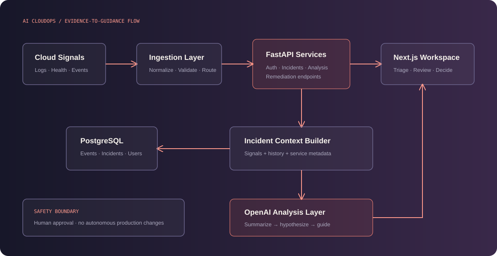

Next.js operations UI
Incident, monitoring and guided-investigation workflows.
An operations workspace bringing logs, incidents, infrastructure health, root-cause analysis and remediation guidance into one workflow.
Cloud incident response is slowed by fragmented telemetry and context switching. Engineers must assemble logs, health signals and operational knowledge before forming a useful hypothesis.
The platform organizes incident signals behind authenticated APIs, persists operational context, and applies AI to summarize evidence, suggest likely causes and surface remediation guidance.
Telemetry → Ingestion → Incident context → Health correlation → AI analysis → Root-cause hypothesis → Remediation guidance

Incident, monitoring and guided-investigation workflows.
Separates ingestion, incidents, analysis and recommendations.
Stores users, operational events and incident context.
Consistent local and cloud service execution.
Recommendations use collected operational context rather than treating the model as a source of truth.
Ingestion, persistence and analysis boundaries allow models and telemetry sources to change independently.
The product supports investigation decisions; it does not imply autonomous production changes.